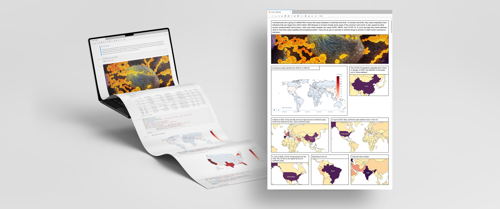
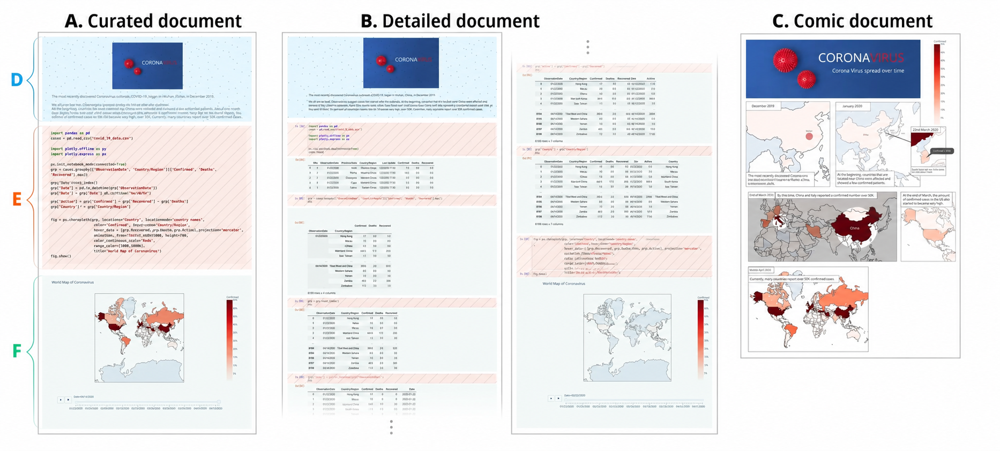
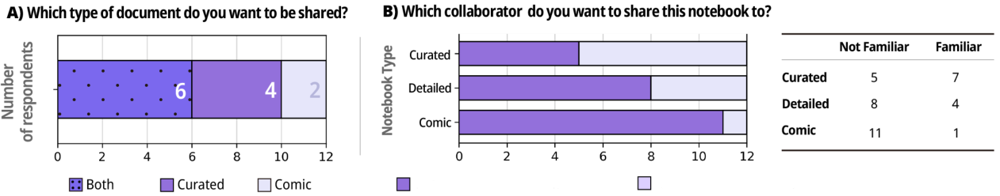
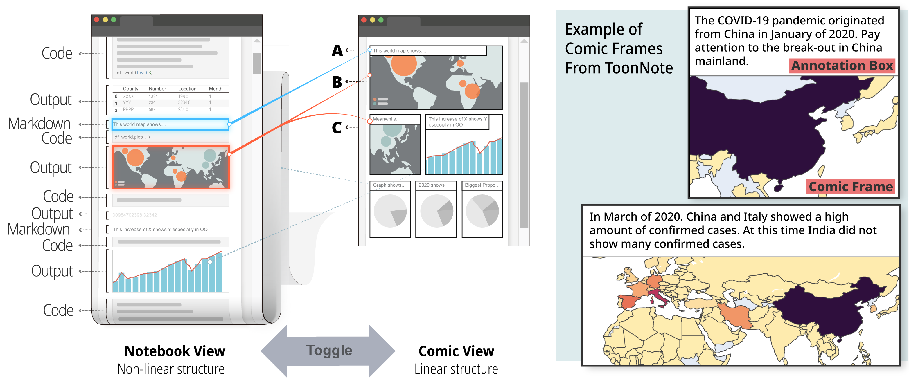
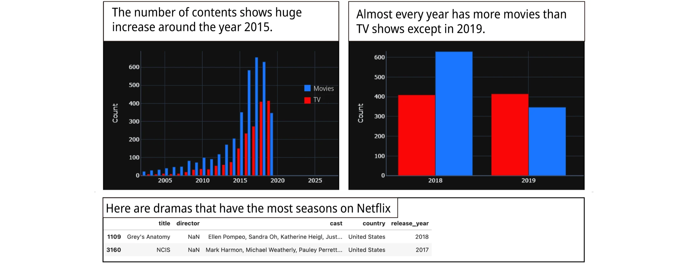
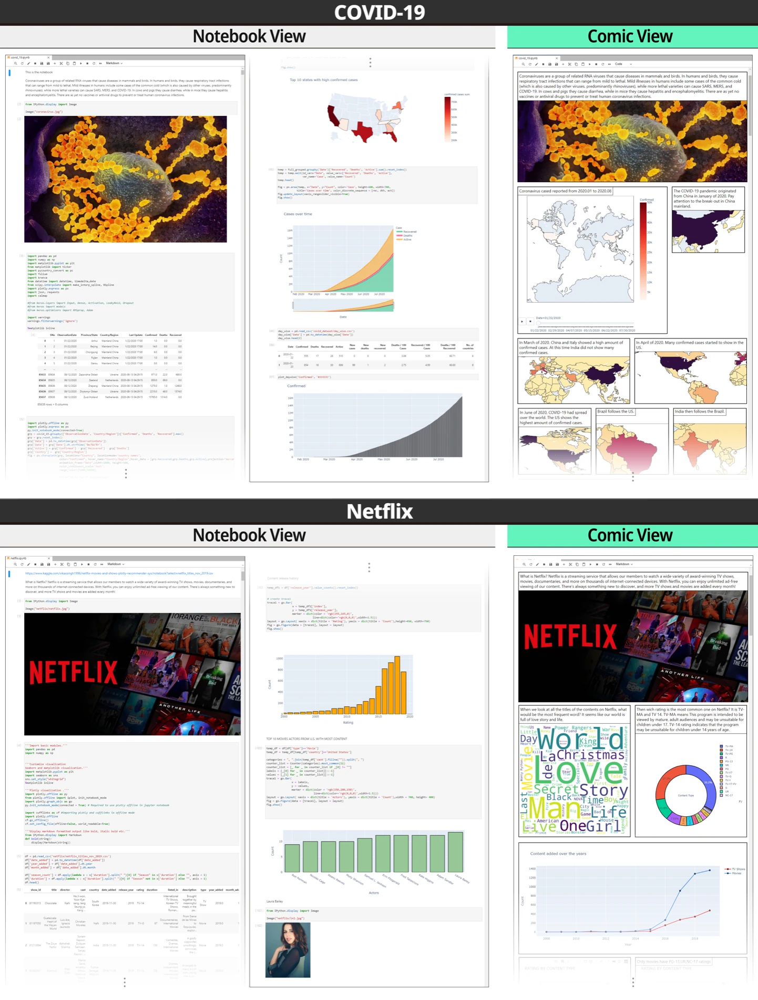
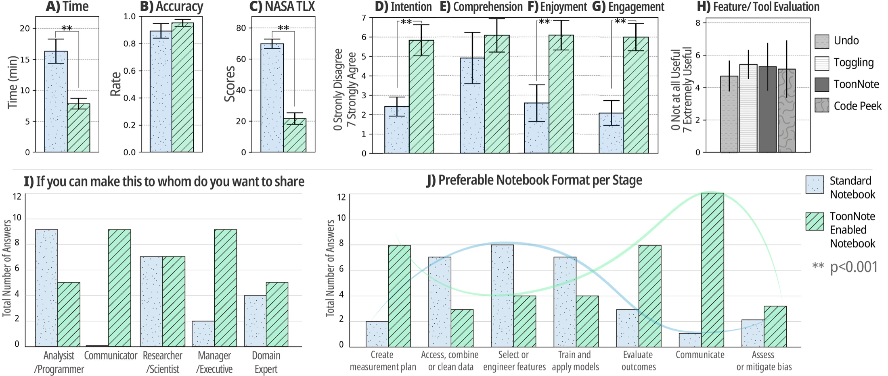

Improving communication in computational notebooks through interactive data comics

Background
Computational notebooks are widely used by data scientists because they combine code, notes, tables, and visualizations in one working document, making it easier to document, analyze, and share a complete workflow. However, the resulting notebook is often long, loosely structured, and filled with intermediate work that obscures the author’s main story.
Collaborators may need different levels of detail. A data scientist may want to inspect code and provenance, while a manager or domain expert may only need the central findings. Existing notebooks make both audiences move through the same dense, vertical document.
Why comics?
Computational notebooks already communicate key findings through visualizations and annotations, but their long stream of code, markdown, and outputs makes the story difficult to follow. Data comics are sequential visual narratives that combine data visualizations and annotations to communicate insights. They can help address these challenges in three ways:
Guide the reader
Comic panels arrange insights in a deliberate sequence, helping readers follow the author’s intended narrative instead of navigating an unstructured document.
Reduce reading effort
Frames divide complex information into memorable chunks and place annotations beside visuals, keeping related insights together while reducing scrolling.
Reach broader collaborators
A visual overview helps people unfamiliar with the dataset grasp the key findings, while ToonNote preserves the notebook, code, and interactive outputs for deeper inspection.
How might data comics make computational notebooks easier to understand and share?
Formative Study
We compared three representations of the same COVID-19 analysis: a concise curated notebook, a detailed notebook, and a static data comic. Twelve participants with data-science backgrounds evaluated how each format supported navigation, understanding, and sharing.


Participants reported that the comic was more welcoming, easier to understand, and required less effort, while the curated notebook retained useful detail and interactive plots. They did not want to lose the notebook’s analytical detail or interactive graphs. This finding led to a multi-level interface that preserves the notebook and adds a Comic View readers can enter or leave at any time.
System Design
JupyterLab is a browser-based workspace for creating and running Jupyter computational notebooks, which organize executable code, explanatory markdown, and generated outputs in cells. ToonNote is a JupyterLab extension that lets an author tag selected markdown and output cells as comic content. Those cells become a compact sequence of frames, while unselected cells remain available in the original Notebook View.

Design goals
The following design goals were developed based on the formative study results.
Integrate overview + detail
Comic View communicates the high-level story while Notebook View preserves the full analytical process.
Support exploration in context
Readers can reveal relevant code and explore an output without leaving the Comic View.
Preserve the author’s view
Readers can interact with a visualization, then restore the visual state recorded by the author.

Core Interactions
These interactions let readers move between overview and detail, inspect the code behind a frame, and explore visualizations without losing the author’s intended view.
Toggle views
Move between Comic View and Notebook View to shift from a curated narrative to the complete analytical document.
Peek at code
Reveal the code behind one comic frame without leaving the story, supporting quick checks of how an output was produced.
Undo / reset view
Explore an interactive chart, then restore the visualization to the state the author recorded for that frame.
Evaluation
We ran a within-subjects study with 12 experienced data analysts. Participants used both standard and ToonNote-enabled notebooks to understand COVID-19 and Netflix datasets, answer seven comprehension questions, and evaluate the reading experience.

Findings
Faster high-level understanding
Participants answered the study questions in 7.83 minutes with ToonNote versus 16.31 minutes with a standard notebook.
Lower task load
NASA-TLX scores fell from 69.86 to 21.67, indicating a substantially less demanding reading experience.
Clearer authorial intent
Participants rated understanding of the author’s intention 5.83/7 with ToonNote versus 2.41/7 with the standard notebook.
More engaging to read
Enjoyment and engagement both averaged 6.08/7, compared with 2.58 and 2.08 for the standard notebook.

ToonNote did not significantly improve overall comprehension among expert analysts, who were already skilled at reading conventional notebooks. Its value was in making the author’s narrative faster to grasp, less cognitively demanding, and more engaging while preserving a path back to the underlying analysis.